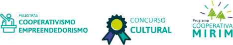

O início da jornada
Tudo começou na cooperativa Sicoob Metropolitano, com atuação em Maringá e região. Já no princípio, surgiu com a missão de difundir a cultura cooperativista e contribuir para o desenvolvimento das comunidades.
Primeiros passos
Desde então, tem como missão o sétimo princípio do cooperativismo: o interesse pela comunidade. Sua metodologia se fundamenta no quinto princípio: educação, formação e informação. Inclusive, foram eles que levaram o Instituto Sicoob a ampliar sua atuação em todo o estado do Paraná, com o início da atuação na Central Unicoob.
Grandes avanços
O Instituto conta com empregados que se dedicam aos programas de impacto social para alcançar comunidades e conectar pessoas. Nesse ano, podemos dizer que já havia um Brasil muito mais cooperativo a criação da primeira Cooperativa Mirim.
A expansão continuou
Foram criados programas e projetos que compõem cada eixo de atuação em uma abordagem integrada sobre cooperativismo e empreendedorismo, cidadania financeira e desenvolvimento sustentável. Tais avanços levaram à ampliação da atuação nos estados do Amapá e Pará.
Evolução a largos passos
Iniciou-se a atuação na Central Rio de Janeiro. Um avanço que levou a muitos outros, poucos anos depois.
O Instituto Sicoob é nacional!
Este foi o ano em que aconteceu a nacionalização do Instituto Sicoob, um grande marco que aumentou o impacto positivo nas comunidades onde o Sicoob está presente.
Criando padrões
O Instituto Sicoob passou a atuar no molde que atua até hoje e, nesse processo, iniciou-se a adesão das cooperativas centrais que coordenam e auxiliam cada.
Criação da semana do Cooperativismo
Um grande marco! A partir daqui, queremos formentar ainda mais o cooperativismo pelo mundo
O início da jornada
Tudo começou na cooperativa Sicoob Metropolitano, com atuação em Maringá e região. Já no princípio, surgiu com a missão de difundir a cultura cooperativista e contribuir para o desenvolvimento das comunidades.
Primeiros passos
Desde então, tem como missão o sétimo princípio do cooperativismo: o interesse pela comunidade. Sua metodologia se fundamenta no quinto princípio: educação, formação e informação. Inclusive, foram eles que levaram o Instituto Sicoob a ampliar sua atuação em todo o estado do Paraná, com o início da atuação na Central Unicoob.
Grandes avanços
O Instituto conta com empregados que se dedicam aos programas de impacto social para alcançar comunidades e conectar pessoas. Nesse ano, podemos dizer que já havia um Brasil muito mais cooperativo a criação da primeira Cooperativa Mirim.
A expansão continuou
Foram criados programas e projetos que compõem cada eixo de atuação em uma abordagem integrada sobre cooperativismo e empreendedorismo, cidadania financeira e desenvolvimento sustentável. Tais avanços levaram à ampliação da atuação nos estados do Amapá e Pará.
Evolução a largos passos
Iniciou-se a atuação na Central Rio de Janeiro. Um avanço que levou a muitos outros, poucos anos depois.
O Sicoob é nacional!
Este foi o ano em que aconteceu a nacionalização do Instituto Sicoob, um grande marco que aumentou o impacto positivo nas comunidades onde ele está presente.
Criando padrões
O Instituto Sicoob passou a atuar no molde que atua até hoje e, nesse processo, iniciou-se a adesão das cooperativas centrais que coordenam e auxiliam cada.
Criação da semana do Cooperativismo
Um grande marco! A partir daqui, queremos formentar ainda mais o cooperativismo pelo mundo
Quem coopera, soma forças.
Conheça os programas que somam:
O Instituto Sicoob é a agência de investimento social estratégico do Sicoob, uma das maiores cooperativas financeiras do Brasil, e atua junto às comunidades em três eixos:
Cooperativismo e
Empreendedorismo
Empreender significa ser um realizador! Esse eixo existe porque entendemos que realizar de forma cooperativa é a melhor estratégia para promover o desenvolvimento econômico local.
Aqui são desenvolvidos programas e projetos que visam a difusão da cultura e dos valores cooperativistas. Tudo isso por meio da disseminação dos princípios de democracia, solidariedade e autonomia, fomentando o espírito empreendedor e de cooperação. Afinal, para cooperar tem que somar!
 Desenvolvimento
Sustentável
Já que uma das missões é contribuir para o desenvolvimento sustentável das comunidades, entende-se que estimular o crescimento econômico, descentralizar o conhecimento e conservar os recursos naturais são questões essenciais para fazer acontecer hoje, pensando no amanhã.
O Eixo de Desenvolvimento Sustentável atua com programas e projetos que fomentam o desenvolvimento de uma sociedade sustentável através da educação, formação, cooperação e participação, além de reconhecer iniciativas que contribuam com o bem comum.
Cidadania
Financeira
O bem-estar financeiro (ou a falta dele) interfere diretamente em todas as áreas da vida de um indivíduo, com reflexos na família e na sociedade. Principalmente em tempos de crise, o assunto ganha proporção e merece mais atenção. Entender o valor do dinheiro é um desafio cujo aprendizado deve começar desde cedo. Equilibrar gastos, desenhar objetivos e sonhar alcançá-los demanda mudanças de comportamento. Neste cenário, a Educação Financeira tem papel essencial e é um dos pilares de atuação do Instituto Sicoob.
O objetivo é orientar, repassar conhecimento, contribuir no planejamento financeiro, disseminar conceitos e práticas saudáveis em relação ao dinheiro, bem como fortalecer ações para a autodisciplina e o controle do orçamento.
Cidadania
Financeira
O bem-estar financeiro (ou a falta dele) interfere diretamente em todas as áreas da vida de um indivíduo, com reflexos na família e na sociedade. Principalmente em tempos de crise, o assunto ganha proporção e merece mais atenção. Entender o valor do dinheiro é um desafio cujo aprendizado deve começar desde cedo. Equilibrar gastos, desenhar objetivos e sonhar alcançá-los demanda mudanças de comportamento. Neste cenário, a Educação Financeira tem papel essencial e é um dos pilares de atuação do Instituto Sicoob.
O objetivo é orientar, repassar conhecimento, contribuir no planejamento financeiro, disseminar conceitos e práticas saudáveis em relação ao dinheiro, bem como fortalecer ações para a autodisciplina e o controle do orçamento.